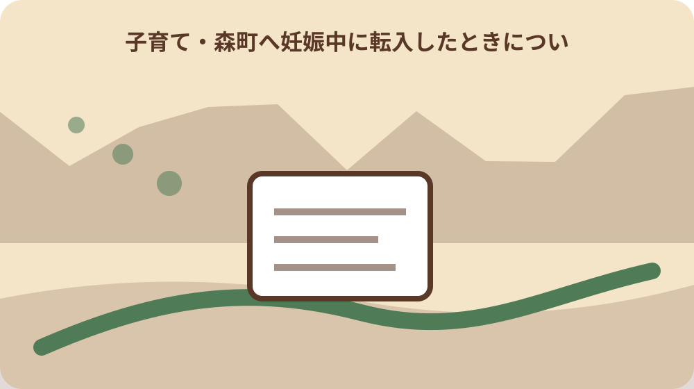
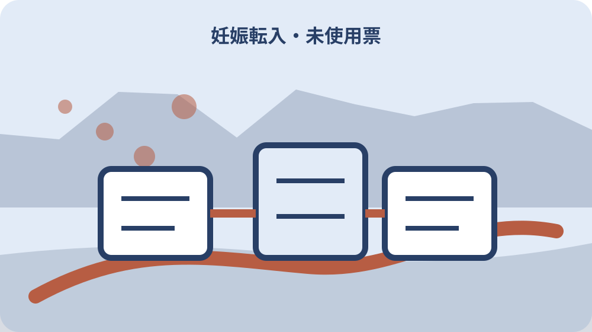

先に結論を確認する
この記事の答え：転入前の母子健康手帳と森町の妊婦健診受診票を混同せず、残回数と相談先を整理したいため、対象、基準日、公式資料、未確認事項を最初の一行へ置きます。
森町で最初に照合する条件：森町公式の二つの異なる案内を2026-08-13に確認する
手帳と受診票を別の行へ置く
『手帳と受診票を別の行へ置く』を調べる場面では、手帳と受診票を別の行へ置くでは、まず母子健康手帳は妊婦健診、出産、乳幼児健診、予防接種の記録に用います。『手帳と受診票を別の行へ置く』を調べる場面では、この事実を出発点に、対象者・対象物・確認日を同じ行へ置きます。『手帳と受診票を別の行へ置く』を調べる場面では、森町へ妊娠中に転入したときの母子手帳・受診票切替表の判断を口頭だけで進めず、根拠となるページ名と更新日も併記してください。
『手帳と受診票を別の行へ置く』を調べる場面では、公式案内の共通条件と、手元の個別事情を二列に分けます。『手帳と受診票を別の行へ置く』を調べる場面では、母子健康手帳は妊婦健診、出産、乳幼児健診、予防接種の記録に用いますという根拠は左へ、手帳と受診票を別の行へ置くでまだ調べる対象は右へ置き、ページ本文から読み取れない事情を補いません。
『手帳と受診票を別の行へ置く』を調べる場面では、原資料の名称と確認日を記したら、数字・人名・物件番号を原文のまま転記します。『手帳と受診票を別の行へ置く』を調べる場面では、転入前の交付物をすべて並べるへ移る前に、森町へ尋ねる質問を一つだけ決め、回答欄を空けて待ちます。
『手帳と受診票を別の行へ置く』を調べる場面では、この節は、対象が一意に決まり、根拠URLへ戻れ、次の担当が読める状態で終了です。『手帳と受診票を別の行へ置く』を調べる場面では、手帳と受診票を別の行へ置くに未確認があれば、結論欄ではなく再確認日の欄を埋めます。
『手帳と受診票を別の行へ置く』を調べる場面では、1番目の確認として『手帳と受診票を別の行へ置く』を保存するときは、根拠となる『母子健康手帳は妊婦健診、出産、乳幼児健診、予防接種の記録に用います』と今回の対象を一本の線で結びます。『手帳と受診票を別の行へ置く』を調べる場面では、資料の写しには取得日、個別メモには記入者、問い合わせ結果には回答日を付け、次に読む人が公式事実と家族の判断を取り違えない状態にしてください。
転入前の交付物をすべて並べる
『転入前の交付物をすべて並べる』用の一件表に、手元の書類を開いたら、転入前の交付物をすべて並べるに関係する名称、番号、日付を原文どおり写します。『転入前の交付物をすべて並べる』用の一件表に、略称や家族の呼び名へ置き換える前に、森町で母子健康手帳を交付する所要時間は一時間程度と案内されていますという公式案内と一致する欄を見つけることが重要です。
『転入前の交付物をすべて並べる』用の一件表に、ここでは『森町で母子健康手帳を交付する所要時間は一時間程度と案内されています』を確認線にします。『転入前の交付物をすべて並べる』用の一件表に、家族の記憶と公式記載が違うときは両方を残し、転入前の交付物をすべて並べるの判断材料として同じ意味に丸めないでください。
『転入前の交付物をすべて並べる』用の一件表に、書類の版、発行元、対象期間を余白へ書くと、後日の更新と区別できます。『転入前の交付物をすべて並べる』用の一件表に、続く母子健康手帳は健康記録として残すで必要になる資料だけを抜き出し、原本の束は崩さず保管します。
『転入前の交付物をすべて並べる』用の一件表に、作業者は確認した日時と方法を署名代わりに残します。『転入前の交付物をすべて並べる』用の一件表に、転入前の交付物をすべて並べるの答えが出ない場合も、調査経路が見えるなら一段階は完了です。
『転入前の交付物をすべて並べる』用の一件表に、2番目の確認として『転入前の交付物をすべて並べる』を保存するときは、根拠となる『森町で母子健康手帳を交付する所要時間は一時間程度と案内されています』と今回の対象を一本の線で結びます。『転入前の交付物をすべて並べる』用の一件表に、資料の写しには取得日、個別メモには記入者、問い合わせ結果には回答日を付け、次に読む人が公式事実と家族の判断を取り違えない状態にしてください。
母子健康手帳は健康記録として残す
『母子健康手帳は健康記録として残す』の対象について、この段階の要点は、交付時には医療機関から受け取る妊娠届出書が必要です。『母子健康手帳は健康記録として残す』の対象について、対象外かもしれない情報まで結論に混ぜず、確認できた範囲を枠で囲みます。『母子健康手帳は健康記録として残す』の対象について、次の窓口へ渡す際は、何を見て判断したかが一目で戻れる形にします。
『母子健康手帳は健康記録として残す』の対象について、母子健康手帳は健康記録として残すの判断は制度名ではなく対象の一致で行います。『母子健康手帳は健康記録として残す』の対象について、交付時には医療機関から受け取る妊娠届出書が必要ですを参照しつつ、氏名・住所・年月・設備位置のうち記事に必要な識別子だけを確認票へ写します。
『母子健康手帳は健康記録として残す』の対象について、窓口へ伝える文章は、現状、知りたいこと、持参できる資料の順に組み立てます。『母子健康手帳は健康記録として残す』の対象について、妊娠届と本人確認書類を確認するへ渡す値を一つに絞ると、質問が別制度へ広がりません。
『母子健康手帳は健康記録として残す』の対象について、確認済みには根拠資料、対象外には理由、未確認には連絡先を付けます。『母子健康手帳は健康記録として残す』の対象について、三つの欄が埋まれば、母子健康手帳は健康記録として残すを家族へ引き継げます。
『母子健康手帳は健康記録として残す』の対象について、3番目の確認として『母子健康手帳は健康記録として残す』を保存するときは、根拠となる『交付時には医療機関から受け取る妊娠届出書が必要です』と今回の対象を一本の線で結びます。『母子健康手帳は健康記録として残す』の対象について、資料の写しには取得日、個別メモには記入者、問い合わせ結果には回答日を付け、次に読む人が公式事実と家族の判断を取り違えない状態にしてください。
妊娠届と本人確認書類を確認する
『妊娠届と本人確認書類を確認する』へ進む前に、妊娠届と本人確認書類を確認するを実行するときは、公式案内にある『交付時にはマイナンバーが分かるものと本人確認書類が必要です』を基準にします。『妊娠届と本人確認書類を確認する』へ進む前に、手続名が似ていても目的や起算日が違うため、一件の記録へ詰め込まず、証明・申請・現地確認を別行で管理します。
『妊娠届と本人確認書類を確認する』へ進む前に、『交付時にはマイナンバーが分かるものと本人確認書類が必要です』は全員に同じ結果を保証する文ではありません。『妊娠届と本人確認書類を確認する』へ進む前に、妊娠届と本人確認書類を確認するでは、公式条件に自分の対象が当てはまるかを一項目ずつ照合します。
『妊娠届と本人確認書類を確認する』へ進む前に、期限が見える資料には取得日も添えます。『妊娠届と本人確認書類を確認する』へ進む前に、次の通常健診十六回分を数えるで古い数字を再利用しないよう、確認時点を日付で囲んでください。
『妊娠届と本人確認書類を確認する』へ進む前に、この場で決められない個別条件は窓口確認へ回します。『妊娠届と本人確認書類を確認する』へ進む前に、妊娠届と本人確認書類を確認するを推測で完了扱いにせず、回答者と回答日まで入った時点で確定にします。
『妊娠届と本人確認書類を確認する』へ進む前に、4番目の確認として『妊娠届と本人確認書類を確認する』を保存するときは、根拠となる『交付時にはマイナンバーが分かるものと本人確認書類が必要です』と今回の対象を一本の線で結びます。『妊娠届と本人確認書類を確認する』へ進む前に、資料の写しには取得日、個別メモには記入者、問い合わせ結果には回答日を付け、次に読む人が公式事実と家族の判断を取り違えない状態にしてください。

通常健診十六回分を数える
『通常健診十六回分を数える』の資料欄には、通常健診十六回分を数えるでは、まず森町は母子健康手帳を紛失した場合の再交付も受け付けています。『通常健診十六回分を数える』の資料欄には、この事実を出発点に、対象者・対象物・確認日を同じ行へ置きます。『通常健診十六回分を数える』の資料欄には、森町へ妊娠中に転入したときの母子手帳・受診票切替表の判断を口頭だけで進めず、根拠となるページ名と更新日も併記してください。
『通常健診十六回分を数える』の資料欄には、まず森町は母子健康手帳を紛失した場合の再交付も受け付けていますを確認票の見出し下へ引用せず要約します。『通常健診十六回分を数える』の資料欄には、その下に通常健診十六回分を数えるの対象番号を置けば、一般案内と今回の一件を混同しにくくなります。
『通常健診十六回分を数える』の資料欄には、写真や画面保存には撮影方向・取得日・ページ名を付けます。『通常健診十六回分を数える』の資料欄には、超音波など別受診票を分けるで照合するとき、同名の別資料を開いても違いを見つけられます。
『通常健診十六回分を数える』の資料欄には、確認済みの記録を付ける前に、別の家族が同じ対象へ到達できるか試します。『通常健診十六回分を数える』の資料欄には、迷った箇所は通常健診十六回分を数えるの備考へ戻し、判断語を削ります。
『通常健診十六回分を数える』の資料欄には、5番目の確認として『通常健診十六回分を数える』を保存するときは、根拠となる『森町は母子健康手帳を紛失した場合の再交付も受け付けています』と今回の対象を一本の線で結びます。『通常健診十六回分を数える』の資料欄には、資料の写しには取得日、個別メモには記入者、問い合わせ結果には回答日を付け、次に読む人が公式事実と家族の判断を取り違えない状態にしてください。
超音波など別受診票を分ける
『超音波など別受診票を分ける』を照合するとき、手元の書類を開いたら、超音波など別受診票を分けるに関係する名称、番号、日付を原文どおり写します。『超音波など別受診票を分ける』を照合するとき、略称や家族の呼び名へ置き換える前に、母子手帳交付時に妊婦健康診査受診票が十六回分交付されますという公式案内と一致する欄を見つけることが重要です。
『超音波など別受診票を分ける』を照合するとき、超音波など別受診票を分けるで扱う公式事実は『母子手帳交付時に妊婦健康診査受診票が十六回分交付されます』です。『超音波など別受診票を分ける』を照合するとき、これに該当しない家族事情や現場状態は、別紙の個別確認欄へ移して根拠の種類を分けます。
『超音波など別受診票を分ける』を照合するとき、原本、写し、ウェブ画面は証拠力も更新方法も違います。『超音波など別受診票を分ける』を照合するとき、多胎追加五回の使用順を読むへ進む際は、どの媒体を見たかまで記録してください。
『超音波など別受診票を分ける』を照合するとき、対象、時点、資料、次の連絡先が四点とも読めればこの節を閉じます。『超音波など別受診票を分ける』を照合するとき、超音波など別受診票を分けるの結論だけを書いたメモは引継ぎ資料にしません。
『超音波など別受診票を分ける』を照合するとき、6番目の確認として『超音波など別受診票を分ける』を保存するときは、根拠となる『母子手帳交付時に妊婦健康診査受診票が十六回分交付されます』と今回の対象を一本の線で結びます。『超音波など別受診票を分ける』を照合するとき、資料の写しには取得日、個別メモには記入者、問い合わせ結果には回答日を付け、次に読む人が公式事実と家族の判断を取り違えない状態にしてください。
多胎追加五回の使用順を読む
『多胎追加五回の使用順を読む』の質問票で、この段階の要点は、妊婦健康診査受診票は券面に定められた週数内に使用します。『多胎追加五回の使用順を読む』の質問票で、対象外かもしれない情報まで結論に混ぜず、確認できた範囲を枠で囲みます。『多胎追加五回の使用順を読む』の質問票で、次の窓口へ渡す際は、何を見て判断したかが一目で戻れる形にします。
『多胎追加五回の使用順を読む』の質問票で、資料上の条件を先に固定します。『多胎追加五回の使用順を読む』の質問票で、今回は妊婦健康診査受診票は券面に定められた週数内に使用しますが基準なので、多胎追加五回の使用順を読むに関係する手元資料へ同じ用語があるかを探します。
『多胎追加五回の使用順を読む』の質問票で、用語が一致しないときは勝手に言い換えず、双方の名称を並記します。『多胎追加五回の使用順を読む』の質問票で、県外健診の委託有無を確認するの窓口質問には、その差を短く添えます。
県外健診の委託有無を確認する
『県外健診の委託有無を確認する』の期限管理では、県外健診の委託有無を確認するを実行するときは、公式案内にある『多胎妊婦には通常分とは別に受診票が五回分追加されます』を基準にします。『県外健診の委託有無を確認する』の期限管理では、手続名が似ていても目的や起算日が違うため、一件の記録へ詰め込まず、証明・申請・現地確認を別行で管理します。
『県外健診の委託有無を確認する』の期限管理では、多胎妊婦には通常分とは別に受診票が五回分追加されますという案内から、今回確認すべき欄だけを抽出します。『県外健診の委託有無を確認する』の期限管理では、県外健診の委託有無を確認すると無関係な制度説明まで転記すると重要な差が埋もれるため、採用理由も一言添えます。
『県外健診の委託有無を確認する』の期限管理では、数字は単位と起算点を離しません。『県外健診の委託有無を確認する』の期限管理では、償還申請の一年期限を記録するへ数値を渡すときは、誰の、何の、いつの数字かを一行で説明します。
償還申請の一年期限を記録する
『償還申請の一年期限を記録する』を家族で見るなら、償還申請の一年期限を記録するでは、まず多胎追加分は通常の妊婦健康診査受診票を十四回使用した後に利用できます。『償還申請の一年期限を記録する』を家族で見るなら、この事実を出発点に、対象者・対象物・確認日を同じ行へ置きます。『償還申請の一年期限を記録する』を家族で見るなら、森町へ妊娠中に転入したときの母子手帳・受診票切替表の判断を口頭だけで進めず、根拠となるページ名と更新日も併記してください。
『償還申請の一年期限を記録する』を家族で見るなら、この節の根拠は多胎追加分は通常の妊婦健康診査受診票を十四回使用した後に利用できますです。『償還申請の一年期限を記録する』を家族で見るなら、償還申請の一年期限を記録するでは、公式の対象範囲と実物の状態を別の色で記し、資料だけで現地確認を済ませません。
『償還申請の一年期限を記録する』を家族で見るなら、問い合わせで得た回答は、質問文と組にして保存します。『償還申請の一年期限を記録する』を家族で見るなら、訪問・電話相談の希望を伝えるに関する別回答と混ざらないよう、担当部署も同じ行へ置きます。

訪問・電話相談の希望を伝える
『訪問・電話相談の希望を伝える』の更新確認時に、手元の書類を開いたら、訪問・電話相談の希望を伝えるに関係する名称、番号、日付を原文どおり写します。『訪問・電話相談の希望を伝える』の更新確認時に、略称や家族の呼び名へ置き換える前に、県の委託外医療機関で受診票を使えなかった場合は費用の一部助成がありますという公式案内と一致する欄を見つけることが重要です。
『訪問・電話相談の希望を伝える』の更新確認時に、訪問・電話相談の希望を伝えるの入口では、県の委託外医療機関で受診票を使えなかった場合は費用の一部助成がありますを現在の公式条件として採用します。『訪問・電話相談の希望を伝える』の更新確認時に、過去の案内を持つ場合は上書きせず、旧版として横へ残してください。
『訪問・電話相談の希望を伝える』の更新確認時に、更新差を見つけたら、実行予定日より前に窓口へ確認します。『訪問・電話相談の希望を伝える』の更新確認時に、大石の視点：未使用券を先に数えるの作業日は、回答後に決める方が手戻りを減らせます。
大石の視点：未使用券を先に数える
『大石の視点：未使用券を先に数える』という実務提案では、この段階の要点は、里帰り健診の助成申請は分娩した月から一年以内に行います。『大石の視点：未使用券を先に数える』という実務提案では、対象外かもしれない情報まで結論に混ぜず、確認できた範囲を枠で囲みます。『大石の視点：未使用券を先に数える』という実務提案では、次の窓口へ渡す際は、何を見て判断したかが一目で戻れる形にします。
『大石の視点：未使用券を先に数える』という実務提案では、公的事実と私の提案を混ぜません。『大石の視点：未使用券を先に数える』という実務提案では、里帰り健診の助成申請は分娩した月から一年以内に行いますは資料で確認できる内容であり、大石の視点：未使用券を先に数えるを一行管理する方法は私、大石浩之の実務提案です。
『大石の視点：未使用券を先に数える』という実務提案では、提案は森町や所管機関の公式見解ではありません。『大石の視点：未使用券を先に数える』という実務提案では、転入日の切替表を家族へ渡すへ進む順序も個別事情で変わるため、担当窓口の回答を優先します。
転入日の切替表を家族へ渡す
『転入日の切替表を家族へ渡す』の最終点検として、転入日の切替表を家族へ渡すを実行するときは、公式案内にある『こども家庭庁は母子保健を妊娠期から子育て期までの切れ目ない支援として案内しています』を基準にします。『転入日の切替表を家族へ渡す』の最終点検として、手続名が似ていても目的や起算日が違うため、一件の記録へ詰め込まず、証明・申請・現地確認を別行で管理します。
『転入日の切替表を家族へ渡す』の最終点検として、最後にこども家庭庁は母子保健を妊娠期から子育て期までの切れ目ない支援として案内していますをもう一度原資料で照合します。『転入日の切替表を家族へ渡す』の最終点検として、転入日の切替表を家族へ渡すの記録が制度の説明だけになっていないか、今回の対象を示す番号や日付があるかを確認してください。
『転入日の切替表を家族へ渡す』の最終点検として、手帳と受診票を別の行へ置くへ引き継ぐ資料は、最新版、旧版、個別証拠の三束に分けます。『転入日の切替表を家族へ渡す』の最終点検として、紛失防止のため保管場所とファイル名も一覧へ入れます。